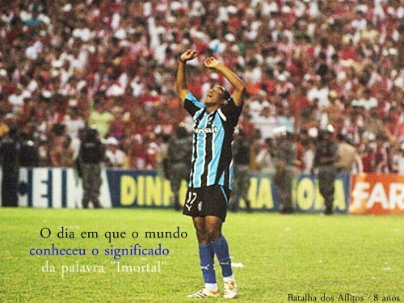
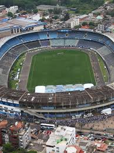

Fundação
O Grêmio Foot-Ball Porto Alegrense foi fundado em 15 de setembro de 1903, em um restaurante da região central de Porto Alegre. A equipe venceu o primeiro campeonato que disputou, a Taça Wanderpreiss, em 1905 - que voltaria a ganhar em outras sete oportunidades. O Grêmio é, junto ao Cruzeiro, o maior campeão da história da Copa do Brasil (quatro taças).
Ano de 1983
O ano de 1983 foi um dos mais marcantes da história da equipe, com as conquistas da Copa Libertadores e do Mundial, com o então atacante Renato Gaúcho tendo marcado os gols da vitória diante do Hamburgo, da Alemanha.
Em 2005, no título da Série B, o time teve jogo histórico contra o Náutico, a "Batalha dos Aflitos".
estádio
Estádio Olímpico Monumental.
O Estádio Olímpico Monumental foi fundado em 19 de setembro de 1954. O Grêmio afirma que o local tem capacidade para 55 mil espectadores, enquanto a CBF indica público máximo de 45 mil. O recorde de presentes ocorreu em 26 de abril de 1981, quando 98.421 pessoas assistiram à derrota gremista para a Ponte Preta, por 1 a 0. Atualmente, o Grêmio colocou em ação o projeto para a construção de um novo estádio. A Arena do Grêmio será levantada até 2012, no bairro Humaitá, em Porto Alegre. A previsão é que o local possa receber 52.398 torcedores.